- 2014 à 2016 – Vacations d'enseignement de la Licence 1ère année au Master
Partenariat : Université de Savoie Mont Blanc
Licence 1 : Biologie animale (TP)
Licence 2 : Ecologie des zones humides et des lacs (Cours et TP) – Fonctionnement écologique des rivières (Cours)
Licence 3 pro : Notions d’hydrobiologie et état écologique des écosystèmes aquatiques (Cours et TP)
Master Chimie, Environnement, Développement Durable : Analyses et tests biologiques (Cours, TD et TP) – Sources et indicateurs de pollution (Cours et TP) – Ecosystèmes aquatiques : structure, diversité, fonctionnement (Cours et TD)
Master Sciences appliquées à la montagne - équipements, protection et gestion des milieux de montagne : Ecosystèmes aquatiques de montagne (Cours et TD)
Master en Chimie, Environnement, Développement Durable : http://www.sfa.univ-savoie.fr/formations/masters/chimie-environnement/
Master Sciences appliquées à la montagne - équipements, protection et gestion des milieux de montagne : http://www.cism.univ-savoie.fr/index.php/fr/formations?id=50
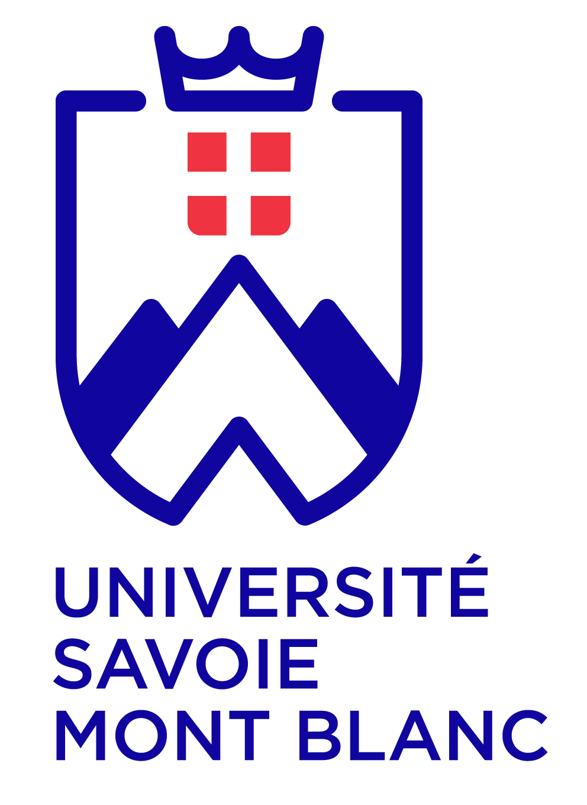 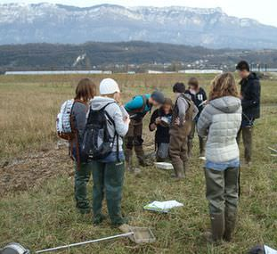 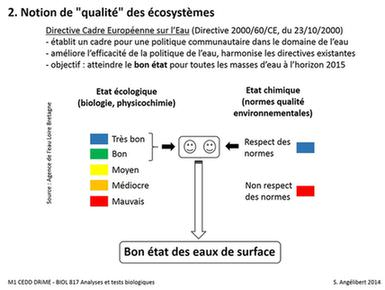 - 2015 – Actualisation de la liste rouge des Odonates de Suisse : suivi de 4 carrés kilométriques dans les cantons de Vaud,
Fribourg et du Valais
Partenariat : Centre Suisse de Cartographie de la Faune
Résumé du projet : http://www.cscf.ch/cscf/page-32583.html
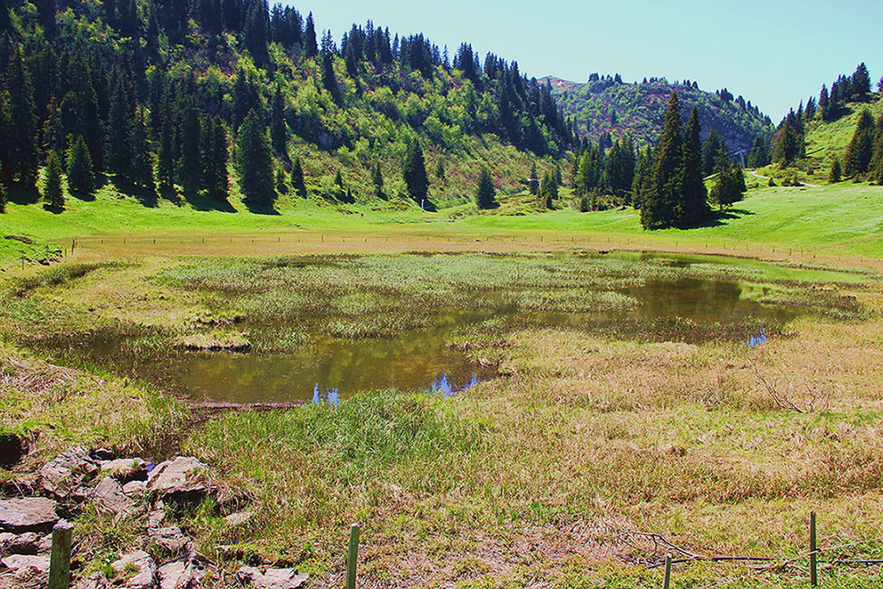 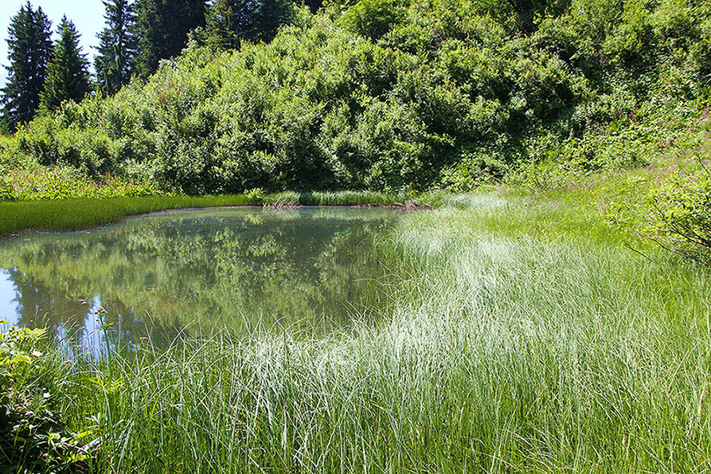 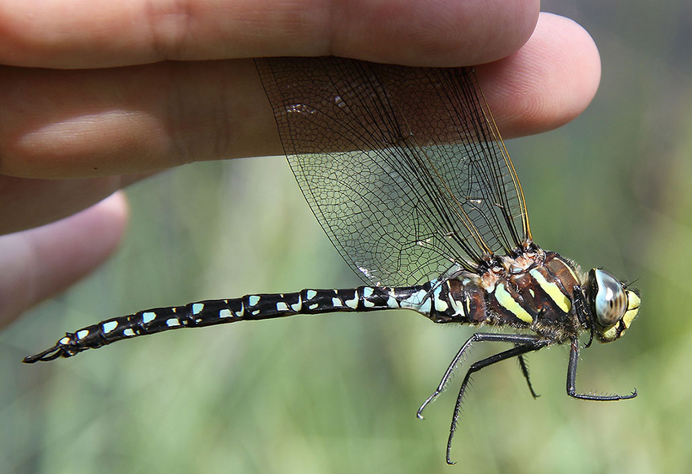 - 2013 à 2015 – Unité de cours GN801 : Les Odonates, des espèces emblématiques, patrimoniales et bioindicatrices (30h d’atelier aux niveaux L1 à L3)
Partenariat : Hepia Filière gestion de la nature
Bachelor en Gestion de la Nature : http://hepia.hesge.ch/fr/bachelor/filiere/science-de-la-vie/gestion-de-la-nature/
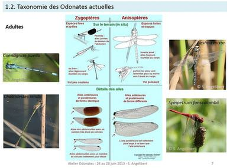 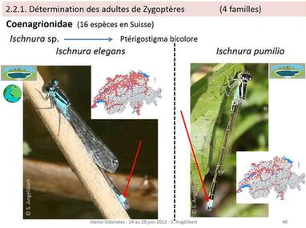 - 2014 – Actualisation de la liste rouge des Odonates de Suisse : suivi de 3 carrés kilométriques dans le canton de Bern
Partenariat : Centre Suisse de Cartographie de la Faune
Résumé du projet : http://www.cscf.ch/cscf/page-32583.html
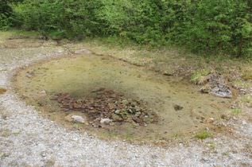 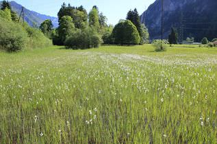 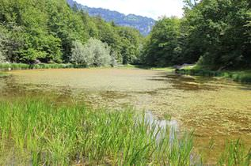 - 2014 – Inventaire des Odonates sur le domaine ENS de Rovorée – La Châtaignière
Partenariat : Conseil général de Haute–Savoie
Présentation du domaine de Rovorée – La Châtaignière : http://www.conservatoire-du-littoral.fr/siteLittoral/305/28-la-chataigniere-74_haute-savoie.htm
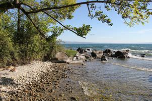 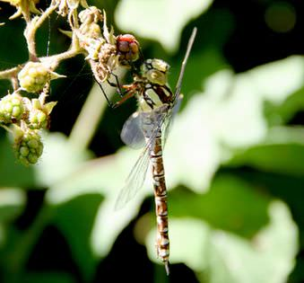 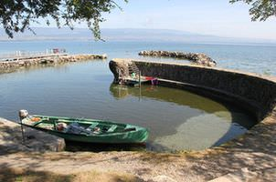 - 2013 – Actualisation de la liste rouge des Odonates de Suisse. Suivi de 3 carrés kilométriques : Belmont-sur-Lausanne (Vaud), Ar du Tsan (Valais), Gouille Verte (Valais)
Partenariat : Centre Suisse de Cartographie de la Faune
Résumé du projet : http://www.cscf.ch/cscf/page-32583.html
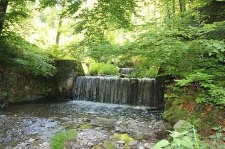 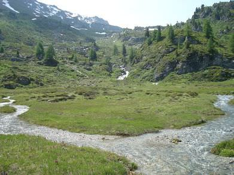 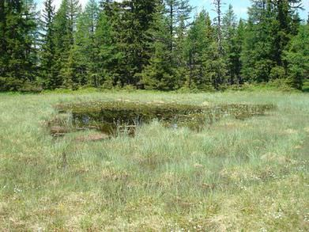 - 2013 – Inventaire odonatologique sur le domaine de Guidou (Haute-Savoie)
Partenariat : Conservatoire du littoral – Ligue pour la Protection des Oiseaux
Présentation du Domaine de Guidou : http://haute-savoie.lpo.fr/index.php?item=13&m_id=22013
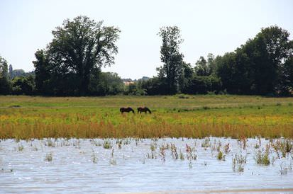 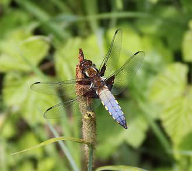 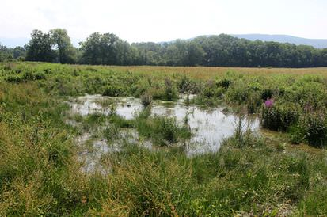 - 2011 à 2013 – Les Odonates des étangs du Forez (Loire)
Partenariat : Hepia – Ecole d’ingénieurs en alimentation, agriculture, environnement et développement durable rural (ISARA) de Lyon
Télécharger le résumé : Fiche_Forez.pdf
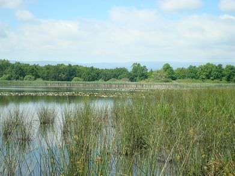 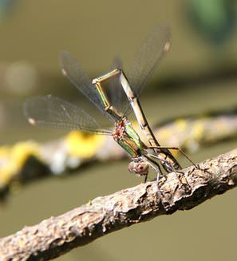 - 2010 à 2012 – eKey : Clé de détermination électronique multi accès des familles de macroinvertébrés aquatiques de Suisse
Partenariat : Hepia – Centre Suisse de cartographie de la faune – Maison de la rivière – Fondation Wilsdorf – Bureau d’étude Aquabug – Eawag – Musée Cantonal de Zoologie de Lausanne – Office fédéral de l’environnement
Télécharger la brochure : brochure_EKEY_macroinvertébrés_f.pdf
Commander : http://www.cscf.ch/cscf/page-20460_en.html
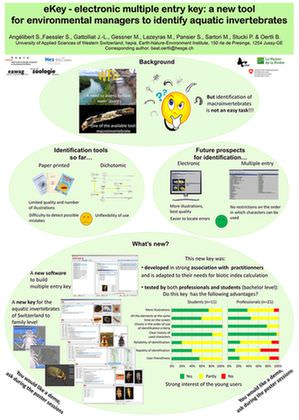 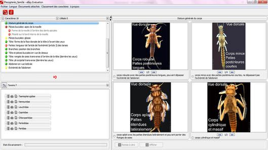 - 2010 – Les Odonates de l’Eperon de Bilet (Haute-Savoie)
Partenariat : Hepia – bureau ECOTEC
Présentation de l’Eperon de Bilet : http://www.sfmcp.ch/?q=sfmcp-et-le-rhone/eperon-de-bilet
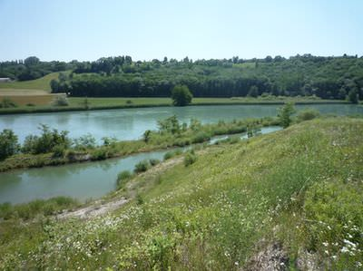 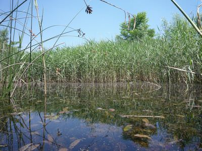 - 2009 – Les Odonates de la plaine de la Haute-Seymaz, des Teppes de Verbois et du Moulin de Vert : Diagnostic
Partenariat : Hepia - bureau ECOTEC
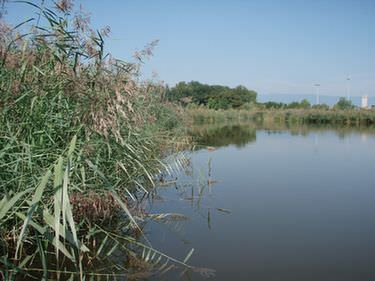 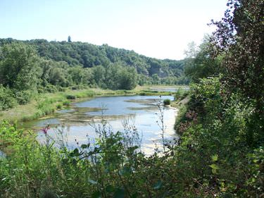 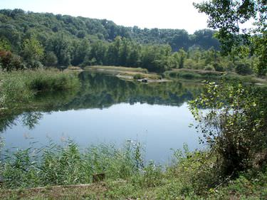 - 2007 à 2010 – Dombes : Influence des pratiques agropiscicoles sur la biodiversité des étangs de la Dombes (Ain, France) en vue d’une valorisation des produits du terroir – Volet macroinvertébrés et amphibiens
Partenariat : Hepia – Ecole d’ingénieurs en alimentation, agriculture, environnement et développement durable rural (ISARA) de Lyon – Université Lyon 1 (UMR CNRS 5023 Ecologie des Hydrosystèmes Fluviaux) – Ministère de l’Ecologie, de l’Energie, du Développement durable et de l’Aménagement du territoire – Agence de l’Eau Rhône-Méditerranée-Corse
Télécharger le résumé : Fiche_Dombes.pdf
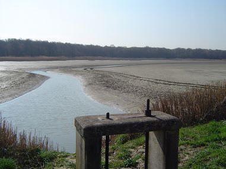 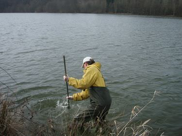 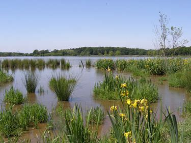 - 2006 à 2008 – IBEM : une méthode standardisée pour l’évaluation routinière de la valeur biologique des petits plans d’eau (mares, étangs, petits lacs)
Partenariat : Hepia – Groupe d’Etude et de Gestion de la Grande-Cariçaie – Fondation des Grangettes – Musée Cantonal de Zoologie de Lausanne – KARCH – Université de Genève : Laboratoire d’écologie et biologie aquatique – AMaibach Sarl – Aquabug – Aquarius – GREN – Natura
Site internet de la méthode : http://campus.hesge.ch/ibem/
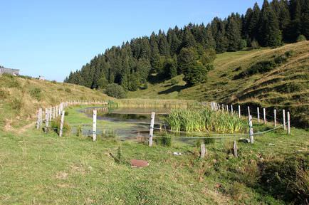 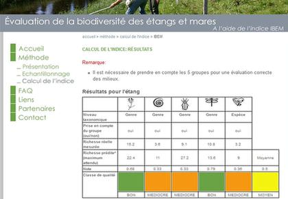 - 2006 – Bilan de 25 années d’échantillonnage de la biodiversité aquatique du canton de Genève
Partenariat : Ecole d’Ingénieurs HES de Lullier – Service Cantonal de l’Ecologie de l’eau de Genève – Centre Suisse de cartographie de la Faune
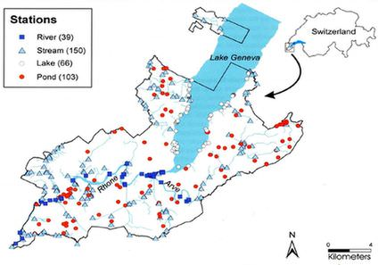 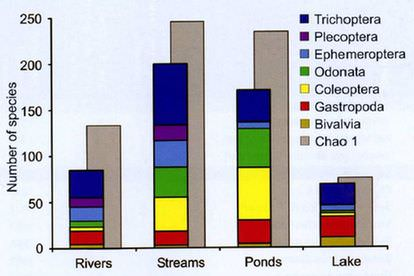 - 2000 à 2004 – Etudes des mares du Parc Naturel Régional des Causses du Quercy : fonctionnement, biodiversité et connectivité inter-mares. Propositions pour l’entretien et la sauvegarde
Partenariat : Laboratoire d’Ecologie des Hydrosystèmes (Université Toulouse III) – Parc naturel régional des Causses du Quercy – Ministère de l’écologie et du développement durable – Conseil régional Midi-Pyrénées
Parc naturel régional des Causses du Quercy : http://www.parc-causses-du-quercy.fr
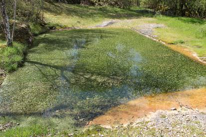 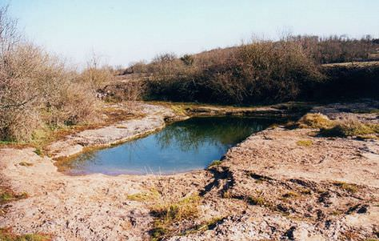